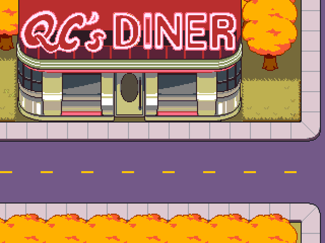
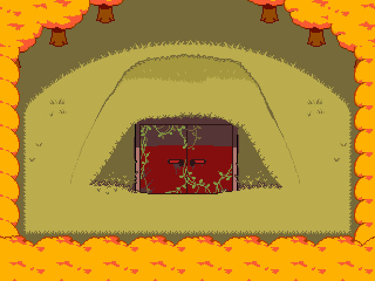
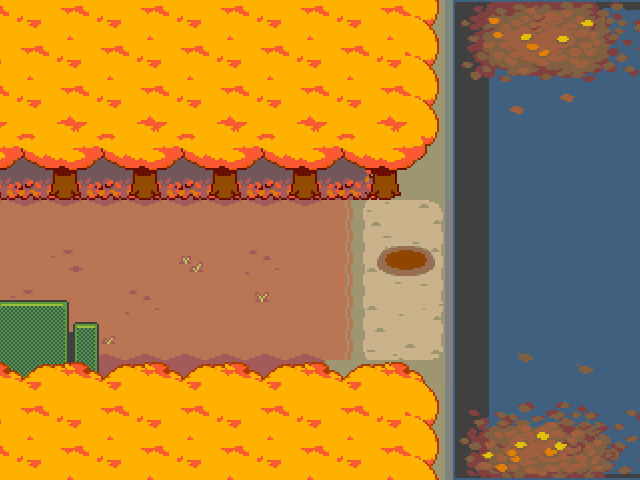
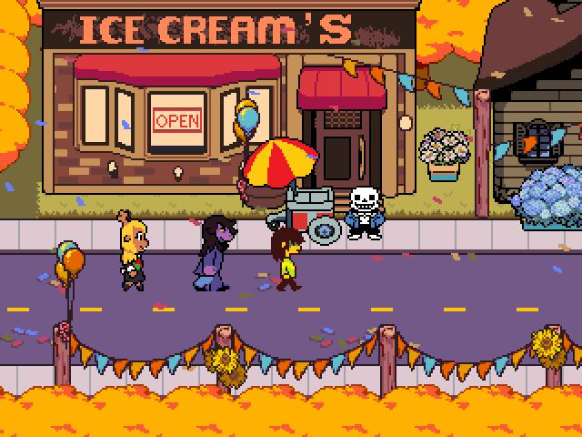
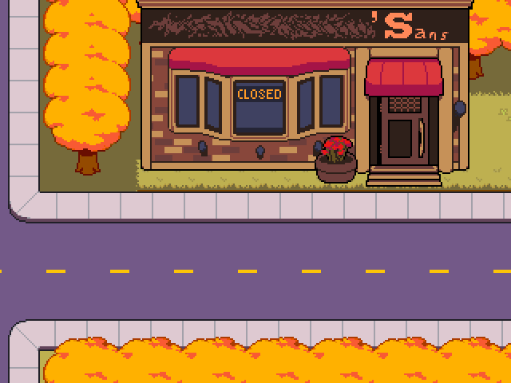

HOMETOWN
A cidade de herois profetizados.. e muitos monstros
A cidade natal é cercada por uma densa floresta com folhas amarelo-douradas. A coloração vibrante sugere que Deltarune se passa durante o outono. A rua principal da cidade corre perpendicularmente da Casa de Toriel até o Abrigo. Ela se divide em três ruas que seguem de leste a oeste, com a saída para sudoeste, passando pela Delegacia de Polícia. Há também um lago a nordeste da cidade...
Hometown é o cenário principal de Deltarune , atualmente governada pela prefeita Carol Holiday , mãe de December e Noelle Holiday . Alega-se que Hometown está ativa desde a época de Gerson Boom , já que seu filho e atual pastor da igreja, Alvin Boom, o teve como professor na escola de Hometown.
Hometown pratica uma religião baseada na Lenda de Delta Rune e seu Anjo, com vários materiais, como Lord of the Hammer e Dragon Blazers, sendo baseados na mesma Lenda. Hometown realiza festivais anuais, nos quais as famílias Holiday e Dreemurr comparecem com seus respectivos filhos, Kris, Asriel, December e Noelle. Asgore Dreemurr alega que um Mundo Sombrio foi criado pelo Cavaleiro Rugidor, o que levou a uma tragédia não especificada, na qual ele perdeu seu cargo de chefe de polícia, restando apenas um Fragmento Negro como prova de sua existência. Com o passar dos anos, novos moradores como Alphys, Susie e Sans se mudariam e se integrariam à Cidade Natal, seja como professor, aluno ou gerente de loja de conveniência. Recentemente, a Cidade Natal sofreu uma queda de energia que cortou o acesso à internet para os moradores e causou reprises diárias de programas de televisão.
━━━━ • ❤︎ • ━━━━ Lugares com aura ━━━━ • ❤︎ • ━━━━
- QC'S Diner
- Shelter
- Lago
- 'Sans, em festival
- 'Sans




